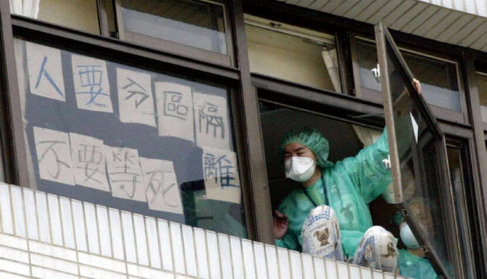
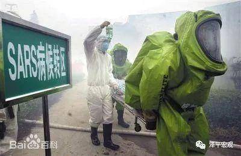
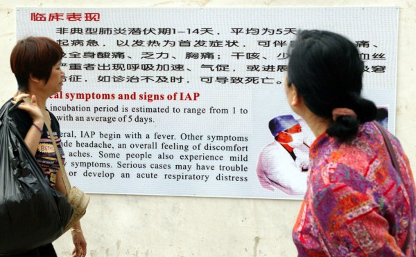

前言
2002年11月至2003年2月中，廣東發生非典型肺炎疫情流行。
證據顯示，續發的香港疫情，為一廣東教授個案所引起，該個案於2003年2月中下旬抵港住宿九龍某酒店，並將病毒傳播給酒店工作人員及客人。廣東教授個案發病住院後，因醫院未能即時發現採取隔離措施，致爆發院內感染，同時藉由受感染之住宿該酒店國際旅客散布全球。其後，世界衛生組織於2003年3月底證實，廣東的非典型肺炎就是現在的SARS。
根據世界衛生組織2003年12月31日的統計資料（資料期間：2002年11月1日至2003年7月31日）顯示，全球共發現8,096例SARS可能病例，且造成774例死亡，其中主要受感染的有中國﹙5,327例﹚、香港﹙1,755例﹚、臺灣﹙346例﹚、加拿大﹙251例﹚及新加坡﹙238例﹚等國家。
SARS(嚴重急性呼吸道症候群疫情)大事紀
-
2003.07.05
2003年7月5日世衛將台灣從疫區除名

聯合報 我國申請世界衛生組織（WHO）將台灣自SARS疫區除名，總算有了好消息。世界衛生組織(WHO)於日內瓦時間7月5日正式公佈，將我國自SARS疫區除名。衛生署將配合於即日起，逐步調整各項防疫措施，正式進入後SARS重建復原工作階段，並作好防範SARS重來之防疫準備工作，包括加強防範境外移入防疫措施、落實醫院感染控制及增加流感疫苗施打對象等。這次SARS疫情的發生，使我們體認到無論是醫療結構、公共衛生體系、民眾的衛生觀念與醫療行為都亟待改善，尤其是專業人才的培訓更是重要。衛生署將在疫病防治方面建立「消防署化」快速反應與打擊的能力，一定深切記取這次慘痛且寶貴的經驗，使民眾能過著平安與喜樂的日子。
衛生署對於世界衛生組織（WHO）終於決議將我國自疫區除名感到欣慰，也是對我國全民防疫的肯定。相較於其他SARS疫區，我國只有28天即自旅遊警示區除名，而且我國從SARS流行的最高峰（每日新通報病例60人）到零星通報病例的時間僅有3.5個星期，皆可證明台灣在疫情的防制上的確優於其他的地區。台灣能在SARS防疫上有好的表現，除了要感謝多位犧牲了自我生命的「活菩薩」，站在防疫最前線辛苦對抗SARS病毒的醫護同仁及相關工作人員，還要感謝國人能在抗疫期間共體時艱，充分地配合各項防疫措施。
衛生署呼籲全民在歡欣SARS遠離台灣，回歸正常健康生活時，持續做好SARS的防疫工作，重視自我與社區的健康管理，將健康自律行為內化成個人的生活習慣。提醒大家對於SARS的威脅千萬不能掉以輕心，SARS可能在秋冬之際捲土重來，因此，我們決不可因為疫情告一段落而對防疫工作有任何的鬆懈。於APEC衛生部長暨資深官員會議時，各國也都強調機場及港口之篩檢將持續進行，所以將來我們仍會持續加強各項篩檢工作，以確保沒有SARS個案由境外輸入台灣，大家並要配合做好量體溫、勤洗手，必要時戴上口罩就醫的健康防疫原則 。 -
2003.04.22
和平醫院爆發集體感染,封院
 BBC.com 2003年4月24日，在缺乏配套措施的情況下，台北市政府無預警地宣布和平醫院封院，上千名醫護人員、病患、家屬以及不少中午進醫院上廁所的計程車司機，突然被強制禁閉在醫院中，依稀記得當時有人趁隙跳窗逃出，有許多醫護人員舉白布條抗議，也有病患在院內上吊自殺，場面相當混亂。
丟紙條、用力拍窗，和平醫院的醫護人員希望外界能聽到他們的聲音。2003年4月24號台灣爆發SARS疫情，為了不讓院內感染擴大，當時的市長馬英九下令封院。短短的兩週，共造成員工57人感染，醫護7人死亡；院內民眾97人感染，24人死亡，疫情蔓延全台。17年前的慘痛教訓讓現在的聯醫和平院區在面對疫情時更加謹慎。
「恐慌不只在醫院內蔓延，經由媒體的大篇幅報導，也讓全國人民都身陷恐懼之中。」
和平醫院封院近兩週的時間中，共造成員工57人感染、7人死亡；院內民眾97人感染、24人死亡，其中1人自殺，疫情蔓延全台，是當年台灣SARS疫情擴散的轉折點，也是921大地震後另一場台灣的「世紀災難」。 -
2003.03.25
台大胸腔科醫生因治療勤姓台商太太時遭到感染,成為台灣醫護人員感染SARS首例

Icu醫生陳志金 Facebook 香港、越南、中國大陸等地從2002年1月陸續傳出可能致命的非典型肺炎病例，台灣疾管局3月14日接獲通報，一名50多歲勤姓台商2月底從廣東深圳經香港返台，出現發燒和瀰漫性肺炎等非典型肺炎症狀，為台灣首例SARS病患，他沒去過大陸的妻子也開始發燒，兩人皆在台大醫院隔離病房接受治療。院方針對勤姓台商做肺部切片，初判是與腺病毒和呼吸道融合病毒同屬的變種病毒，和當時香港推斷的病源相同。
三月初，勤姓台商夫婦先後因為呼吸衰竭住進台大醫院，成為國內首宗「嚴重急性呼吸道症候群」（Severe Acute Respiratory Syndrome，簡稱SARS）的知名病例，從此，SARS成為家喻戶曉的名詞。當時，由於SARS的病原特性、傳染途徑與治療方式尚未有確切輪廓，各界說法也莫衷一是，單單就傳染途徑而言，有一說SARS乃空氣傳染，一說為性行為傳染，最後則以飛沫傳染為各界所公認。易言之，SARS乃是流行病學的新生事物，也是「健康傳播」面臨的新挑戰，媒體該如何報導？該報導什麼？成為值得省思的重要課題。
由於國內三月份的SARS疫情並不嚴重，尚能維持所謂「三零紀錄」（無院內感染、無社區感染以及無死亡病例），加上美伊戰爭開打，因此SARS報導並未佔據重要版面，前四版要聞版幾乎全部是戰爭新聞。此時的新聞焦點，除了勤姓台商夫婦的病情發展之外，最重要的新聞焦點則是「SARS是否該列入第四類法定傳染病」。 -
2003.03.14
台灣出現首個確診嚴重急性呼吸道症候群案例

聯合晚報 2003年3月14日，當時的疾管局接獲通報，一名50多歲台商從深圳經香港回台，出現發燒和瀰漫性肺炎等非典型肺炎症狀，為台灣首例SARS病患；而今年1月21日，台灣出現首起新冠肺炎案例，同樣是50歲上下，同樣從大陸回台後確診；不同的是，首起SARS病患的妻子，並未去大陸，但也開始發燒，兩人皆在台大醫院隔離病房接受治療。
翻閱當時的報紙，台大醫院3月25日證實，一名住院醫師感染SARS，這名醫師照顧過這位台商的妻子，101名醫護人員列冊追蹤。 -
2003.02.14
中國政府才向世界衛生組織WHO通報
 Baidu百科 中國衛生部通知世界衛生組織，廣東暴发的肺炎在臨床上的癥狀與非典型肺炎一致。排除了炭疽病、肺鼠疫、鉤端螺旋體病和出血熱的可能。 一月下旬，中山的一份報紙发布了來自省里權威部門的一條消息：“這種病毒已經在廣州出現了一個多月，這種病已經受到了有效的治療和控制。群眾沒有必要驚慌。” 當時正是春節前的春運高峰，不知有多少人在不知不覺中把這新出現的致命病毒從廣東帶到了祖國各地，傳染給了共度春節的家人朋友。如果大批的民工已把薩斯病毒帶到了廣大的農村，後果不堪設想。中國政府保持了春節前後的“穩定”，卻散失了控制這場瘟疫於“萌芽狀態”的時機。 “非典型肺炎”的名稱也是在這時被引用的。雖然這明擺著是一個急性致命傳染病，卻被冠以“非典”“肺炎”名稱，但是真正的“非典型肺炎”是不傳染的。
-
2002.12
SARS開始在網際網路流傳
 Christian Keenan／Getty Images 2 月 8 日，廣州市內的人開始以手機短信分享有關「致命流感」的報道；當晚，諸如禽流感、炭疽之類的用詞開始在當地網站出現。及至同月 10日，當地媒體方刊登通告，承認疾病的存在，並列出一些預防措施。11 日，廣東省衛生官員舉行記者會，終於承認全省共有 305 宗非典型肺炎病例，同時表示疫情「得到全面控制」。基於官方的說法，公眾恐慌暫時緩解，對疾病失去警惕。 當時，有報道開始質疑政府對疫情的處理方式，省宣傳局於同月 23 日中止對該病的報道，資訊真空再現。直至 4 月初，中國同意與世衛組織合作，官方才重新發佈沙士資訊。
-
2002.11.16
中國廣東順德爆發疫情
.jpg)
FREDERIC J. BROWN／AFP via Getty Images 2003 年雖是沙士標誌性一年，但追溯之下，首宗沙士病例早在 2002 年 11 月中的廣東佛山出現，其後同省的河源、中山市亦發現此病。新型病毒沙士作為「奇怪的疾病」，則最早於 12 月中為中國衛生人員所注意。2003 年 1 月 2 日，有健康專家小組曾前往河源，有鑑於此，黃教授相信，當地的防疫站事前已向省衛生局通報這種疾病。隨後的 1 月 27 日，由省部級組成的衛生專家小組將報告呈交北京衛生部，由於報告標上「最高機密」，只有省部級高級衛生官員方可閱讀。
然而，該「最高機密」在其後三天，均沒有任何獲授權的衛生官員閱讀。即使省當局向全省醫院分發公告，由於正值農曆年假，只有極少衛生工作者收到。同時，公眾仍對沙士一無所知。根據當時的「國家秘密法實施條例」及「傳染病防治法」，由衛生部或衛生部授權的機構宣佈前，有關公共衛生處理的信息應視為國家機密。因此，直至衛生部選擇提供任何資訊前，病人、任何報道該疾病的醫生或新聞工作者，皆有可能因洩露國家機密觸犯法例。有關沙士的資訊出現真空，持續至 2 月。當時政府禁止媒體報道有關病情並切斷香港電視台的新聞片段。當地政府也要求媒體不要過度渲染該地區的疫情，以免引起民眾恐慌。 到12月底，關於這種“非典型肺炎”的疫情開始在互聯網流傳，由於當時不了解病情，相關的評論比較混亂。隨後中國政府在國內封殺了關於疫情的討論，所有的論壇對“非典型肺炎”的消息一律消音，當時中國最大的官方論壇之一——人民網強國論壇有數位用戶因討論“非典型肺炎”疫情被管理員封賬號。群眾未能得知真實情況，反而加劇焦慮、恐懼及引起廣泛猜測。
{kind=link}
緣起
.png)
中國武漢是最先發現病毒並觸發廣泛疫情的重災區，該市的華南海鮮市場自去年12月起不斷有人確診，被視為重要的源頭之一。 起初，外界對病毒的了解並不多，許多人聯想到，病毒可能與華南海鮮市場附近的武漢病毒研究所有關，在沒有提供任何具體科學證據下，質疑是「生化武器」，中國政府、研究所等官方機構都立即就這則未經證實的假新聞闢謠。
2020年3月，中美雙方就病毒命名問題出現口角，美國總統特朗普及國務卿蓬佩奧多次以「中國病毒」、「武漢病毒」來稱呼新型冠狀病毒而引發中國不滿。中國外交部發言人趙立堅在推特上質疑病毒「可能是美軍把疫情帶到了武漢」。 這名中國官員的質疑再次帶出了病毒是否人工製造的討論。美國高官以至歐美媒體，很快就指責中國官員帶頭散播未經證實的假新聞。
網上流傳許多「專家」聲稱病毒「可能」或「不排除」是人工製造，但至今，沒有一份登上國際學術期刊的研究報告認為病毒有可能是人工製造。相反，多份權威研究肯定病毒是自然演化，而不是人工製造。 今年2月，權威醫學期刊《柳葉刀》刊出一份來自八個國家的27名科學家的聯署聲明，指各國科學家分析新冠病毒基因組，得到「壓倒性」的結論，認為新冠病毒和其他新興病原體一樣，源於野生動物，強烈譴責新冠病毒非自然起源的陰謀論。 國際《自然》期刊3月刊登了一份美國、澳洲、英國等專家共同撰寫的研究報告，指研究了病毒的特徵和結構，包括其重組受體結合域（RBD）及多合性切位點（polybasic cleavage site），認定病毒「不可能是人工製造」。 RBD是病毒勾著宿主細胞的刺蛋白，即是冠狀病毒中呈現王冠形狀的部分。研究人員認為，蛋白能夠如此有效地與人類細胞連結，現有科學難以做到，是其中一個非人為的證據。
新冠病毒的出現吸引了全球不同的科學家參與研究，得出各種觀點和理論，但有時候，由於研究結果太早向媒體發表，出現了一些研究後來被推翻的情況。
隨著時間推進，專家們得到病毒更完整的基因排序，能夠作出更全面的比對研究。科學界目前主流認為，病毒與蝙蝠和穿山甲有關。
武漢病毒研究所新發傳染病研究中心主任石正麗團隊最先發現新冠病毒與蝙蝠存在關連，他們在2月初刊登在權威《自然》期刊的研究指出，新冠病毒與雲南蝙蝠病毒株（RaTG13）的基因排序有96%的相似性，相信蝙蝠是新冠病毒的天然宿主，不過兩種病毒的突刺S蛋白受體並不一樣，當時未能完全知道病毒的演變過程。
這份研究被廣泛引用，令國際專家們傾向病毒是由動物身上逐步演化到人類身上。
中國華南農業大學2月7日宣佈，發現穿山甲很可能是新冠病毒的中間宿主。他們發表的研究顯示，團隊利用廣東省森林公安局和海關在2019年3月至12月截獲的25隻馬來亞穿山甲中提取樣本，發現其冠狀病毒與新冠病毒的基因相似，特別是其S蛋白受體，「近乎一樣」，推斷穿山甲可能是中間宿主，其冠狀病毒可能與雲南蝙蝠病毒株（RaTG13）重組而有所演化。
外界最先懷疑病毒來源是當地最先發生多宗確診個案的華南海鮮市場，在1月22日，中國疾控中心主任曾在發佈會上，指病毒來源是武漢一家海鮮市場非法銷售的野生動物。
不過，科學研究認為，病毒與雲南蝙蝠以及被走私到中國的穿山甲的冠狀病毒有相似性，這些動物並非來自武漢，病毒發生異變的過程也不一定在武漢發生。但一些專家認為，這顯示病毒可能源自中國，最先在中國境內發生變異的可能性最大。
美國中密歇根州大學微生物學系助理教授邁克爾·康韋（Michael
Conway）對BBC中文表示，中國地區多個物種存在相關病毒，流行病學研究也把首輪疫情爆發，指向武漢，顯示新冠病毒「明顯地源自中國」。但他強調，這種病毒異變在各個地方都有可能發生，「不能怪責個別國家，這是人類的問題需要共同解決」。
香港大學公共衛生學院助理教授林讚育有份參與新冠病毒與廣西的走私穿山甲研究。他對BBC中文表示，單憑他們的研究未能推斷出這批馬來亞穿山甲到底是在中國還是東南亞感染病毒。但他指出，非法走私野生動物本身有風險帶入外來病原體????????????????????????????????????